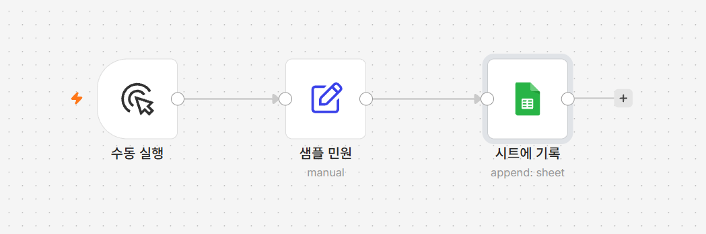
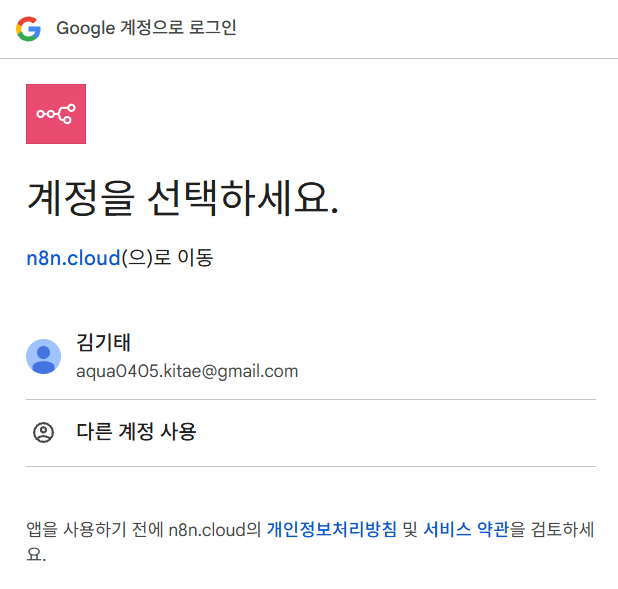
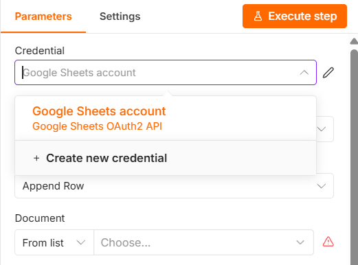

민원 전화를 받으면 수화기를 든 채로 메모지에 적습니다. 이름, 연락처,
무슨 일인지. 전화를 끊고 나서 그 메모를 접수 대장에 옮겨 적습니다. 옮겨 적다가
연락처 숫자 하나가 틀리고, 유난히 바쁜 날은 옮겨 적는 것 자체를 잊습니다.
나중에 "접수했다는데 기록이 없다"는 말이 나오는 건 대개 이 지점입니다.
게다가 그 대장은 보통 내 컴퓨터 안에만 있습니다. 팀장님이 "이번 주 민원
몇 건이에요?" 하고 물으면 파일을 열고 눈으로 세어 답합니다. 옆자리 동료가
대신 답할 수는 없습니다.
접수와 동시에 구글 시트에 한 줄이 저절로 쌓이면 두 문제가 함께
사라집니다. 옮겨 적을 일이 없으니 오타가 없고 빠뜨릴 수도 없습니다. 그리고
구글 시트는 링크만 있으면 누구든 지금 이 순간의 현황을 봅니다.
이번 시간부터 바깥 서비스와 연결합니다
지금까지는 n8n 안에서만 놀았습니다. 3강부터는 구글 시트에 실제로 값을 씁니다.
그러려면 "이 n8n이 내 구글 계정을 써도 된다"고 허락하는 절차가
필요한데, 이것을 자격증명이라고 부릅니다. 한 번 만들어두면 4·5강에서
다시 만들 필요는 없습니다.
이 허락 화면은 n8n을 어디서 쓰느냐에 따라 다르게 생겼습니다.
n8n 클라우드는 구글 로그인 버튼만 누르면 되지만, 내 컴퓨터에 설치한
경우에는 Client ID·
Client Secret 두 값을 먼저 넣어야 합니다.
n8n을 쓰는 두 가지 방법 —
구글 연결 항목을 이번 시간 전에 확인하세요. 아래 따라하기는
두 값을 이미 넣었거나 클라우드를 쓰는 경우를 기준으로 씁니다.
이번 시간에 만들 것
샘플 민원 데이터를 만들어 구글 시트에 한 줄씩 자동으로 쌓는 워크플로우를 만듭니다.
구글 계정과 시트가 필요합니다
이번 시간부터 구글 시트에 연결합니다. 아직 준비하지 못했다면
준비물 ① 구글 계정 준비와
구글 시트 준비를 먼저 보고 오세요.
[그림 3-1] 완성된 모습 — 수동 실행 → 샘플 민원 → 시트에 기록

01·02강에서 만든 값 만들기·
값 가져오기는 사라지고, 그 자리에 실제 민원 데이터를 담은
샘플 민원이 들어갑니다. 이 노드는 07강까지 그대로
재사용하니, 여기서 정한 필드 이름을 잘 기억해두세요. 마지막 노드 이름 아래 흐리게 적힌
append: sheet는 "시트에 한 줄 추가"라는 설정이 제대로 잡혔다는
표시입니다.
따라하기
기존 노드 두 개 지우기
01·02강은 표현식 문법을 연습하기 위한 예제였습니다. 이제부터는 진짜 민원
데이터를 다루므로 그 두 노드는 더 이상 필요 없습니다.
값 만들기 노드를 클릭해 선택한 뒤 키보드의
Delete 키를 누릅니다. 같은 방법으로
값 가져오기 노드도 지웁니다.
샘플 민원 노드 추가하기수동 실행 오른쪽 +를 누르고
Edit Fields (Set)를 고릅니다. 노드 제목을 더블클릭해
샘플 민원으로 바꿉니다.
필드 5개 채우기
노드를 열었을 때 이름과 값을 입력할 빈 줄이 하나 보인다면, 그 줄을 첫 번째 항목으로
쓰고 필드 추가 버튼을 네 번 더 눌러 나머지 줄을 만듭니다. 빈 줄이 보이지 않는다면
필드 추가 버튼을 다섯 번 눌러 다섯 줄을 만듭니다. 어느 쪽이든 줄이 다섯 개가 되면
아래 다섯 줄을 순서대로 채웁니다. 왼쪽이 이름 칸, 오른쪽이 값 칸입니다.
이름 = 김기태 연락처 = 010-1111-2222 이메일 = 본인이 실제로 쓰는 Gmail 주소 종류 = 생활 상세설명 = 집 앞에 쓰레기가 무단 투기되어 있습니다.
이메일만은 예시 문구가 아니라 본인이 실제로 받는
Gmail 주소를 그대로 입력합니다. 04강부터 이 주소로 메일이 실제로 발송됩니다.
Google Sheets 노드 추가하기샘플 민원 노드 오른쪽 +를 누르고
Google Sheets를 고릅니다.
자격증명 연결하기
노드를 열면 맨 위 Credential 항목에
Sign in with Google이라는 구글 로고가 붙은 버튼이 바로
보입니다([그림 3-2]). 이 버튼을 누르면 새 창(또는 팝업)이 뜹니다.
버튼 오른쪽의 or setup manually는
Client ID·Client Secret을 직접
넣는 방식입니다. n8n을 내 컴퓨터에 설치해 쓰는 경우에는 이 쪽으로 가야
하며, 그때는
두 가지 방법 페이지의 구글 연결
항목을 따르세요.
[그림 3-2] Credential 항목의 Sign in with Google 버튼
새 창에서는 먼저 계정을 선택하세요.라는 화면이 나옵니다
([그림 3-3]). n8n.cloud(으)로 이동이라고 적혀 있고 그 아래
내 구글 계정이 보이는데, 준비해둔 개인 구글 계정을 고릅니다. 이어서 이 앱이
내 구글 데이터에 접근하도록 허용할지 묻는 화면이 나오면 허용과 비슷한 문구의
버튼을 눌러 동의합니다.
화면 문구는 구글 쪽에서 수시로 바뀌므로 정확한 문구를 외울 필요는
없습니다. "계정을 고르고", "접근을 허용하겠느냐"는 취지의 화면이면 진행하면 됩니다.
[그림 3-3] 구글 계정 선택 화면

창이 닫히고 n8n 화면으로 돌아오면 Credential 칸에
Google Sheets account라는 자격증명이 만들어져 있습니다.
칸을 눌러보면 [그림 3-4]처럼 그 자격증명(Google Sheets OAuth2
API)이 목록에 들어 있는 것을 확인할 수 있습니다.
목록 아래의 + Create new credential은
자격증명을 하나 더 만들 때 쓰는 항목입니다. 지금은 누르지 않아도 됩니다.
[그림 3-4] 만들어진 Google Sheets account 자격증명

기관 계정은 막혀 있을 수 있습니다
기관에서 발급한 구글 계정(예: @korea.kr)은 관리자가 외부 앱 연결을 막아둔 경우가
많습니다. 권한 허용 화면에서 오류가 나면 개인 Gmail 계정으로 다시 시도하세요.
체크포인트 — 여기까지 잘 됐는지 확인하세요Credential 칸에
Google Sheets account가 채워져 있고, 노드 위에 오류를
나타내는 빨간 표시가 없으면 여기까지는 정상입니다. 이름이 비어 있거나 오류 표시가 보이면
이 단계(자격증명 연결하기)로 돌아가 처음부터 다시 해보세요 — 특히 기관 계정으로
로그인하지 않았는지 확인하세요. 정상이면 이어서 Resource·Operation 설정으로
넘어갑니다.
Resource·Operation 설정하기Resource는 Sheet Within Document
그대로 둡니다. Operation은 눌러서
Append Row(한 줄 추가하기)로 바꿉니다 —
[그림 3-2]가 두 칸을 이렇게 맞춰둔 상태입니다.
처음 채워져 있는 값은 n8n 버전에 따라
Get Row(s)(가져오기)나
Append or Update Row일 수 있습니다. 무엇으로 되어 있든
Append Row로 바꾸면 됩니다. 제대로 바뀌면 캔버스의 노드
이름 아래에 append: sheet라고 표시됩니다.
시트 고르기Document 칸은 왼쪽이 From list로
되어 있습니다. 오른쪽 Choose… 칸을 눌러 목록에서 준비물에서
만든 시트(예: 민원 처리 리스트)를 고릅니다.
고르기 전에는 칸 오른쪽에 빨간 경고 표시가 떠 있습니다 — 아직 안
골랐다는 뜻이니 놀라지 마세요. 이 목록이 비어 있으면 자격증명이 제대로 연결되지 않은
것입니다 — 5단계로 돌아가 다시 확인하세요.
탭 고르기Sheet 칸을 눌러 목록에서 시트 탭을 고릅니다. 새로 만든
스프레드시트라면 탭이 하나뿐일 것이므로 그 탭을 고르면 됩니다. 고르고 나면 왼쪽에
By Name, 오른쪽에 탭 이름(예: 시트1)이
표시됩니다.
탭 이름이 Sheet1이든 시트1이든
상관없습니다 — 직접 입력하지 않고 목록에서 골라 쓰기 때문입니다.
칸 매핑하기Mapping Column Mode는 기본값인
Map Each Column Manually 그대로 둡니다. 그 아래
Values to Send라는 제목과 함께 준비물에서 만든 여섯 칸
(이름·연락처·이메일·종류·상세설명·등록일)이 나타납니다. 각 칸 오른쪽의
표현식 전환 스위치를 눌러 Expression 모드로 바꾼 뒤 아래 값을
그대로 입력합니다.
스위치는 여섯 칸을 각각 따로 눌러야 합니다. 한 칸에서
누른 것이 나머지 칸까지 적용되지는 않습니다. 안 누른 칸은 입력한 글자가 그대로
시트에 들어갑니다.
제대로 바뀐 칸은 [그림 3-5]처럼 왼쪽에 회색
fx 표시가 붙습니다. 여섯 칸 모두에 이 표시가 있는지
눈으로 확인하세요 — 표시가 없는 칸은 아직 Fixed 모드입니다.$now는 지금 이 순간의 날짜와 시간입니다.
.toFormat('yyyy-MM-dd')는 그 날짜를
2026-08-03 같은 모양으로 바꿔줍니다 — [그림 3-5]의 맨 아래
등록일 칸 밑에 그 결과가 미리 보입니다.
노드 이름 바꾸기
노드 제목을 더블클릭해 시트에 기록으로 바꿉니다.
실행하고 확인하기
아래쪽 Execute workflow를 누른 뒤 구글 시트 화면으로
가서 새로고침합니다. 2행에 방금 입력한 값들이 그대로 들어가 있고,
등록일 칸에 오늘 날짜가 찍혀 있으면 성공입니다.
안 될 때
Document 목록이 비어 있습니다 — 자격증명이 제대로 연결되지 않았습니다.
자격증명 연결 단계를 다시 확인하세요.
값이 엉뚱한 칸에 들어갑니다 — 구글 시트의 머리글 철자가 정본(이름·연락처·이메일·종류·상세설명·등록일)과
다릅니다. 시트 1행을 다시 확인하세요.
일부 칸에만 {{ $json.이름 }} 같은 글자가 그대로 들어갑니다 —
그 칸의 표현식 전환 스위치를 안 눌렀습니다. 스위치는 여섯 칸을 각각 따로 눌러야 합니다.
값이 제대로 들어간 칸과 비교해 보면 안 눌린 칸을 찾을 수 있습니다.
권한 오류가 납니다 — 기관 계정을 쓰고 있을 가능성이 큽니다. 개인 구글
계정으로 자격증명을 다시 연결하세요.
이번 단계 워크플로우 받기
따라오다 막혔다면 이 파일을 받아 n8n에서 불러오면 이어서 진행할 수 있습니다.
불러온 뒤 반드시 확인하세요
이 파일에는 자격증명이 들어 있지 않습니다. 불러온 뒤 시트에 기록
노드를 열어 자격증명을 다시 골라야 합니다. Document 칸에는
여기에_본인_시트_ID라는 자리표시자가, 샘플
민원 노드의 이메일 값에는
본인이메일@example.com이라는 자리표시자가 들어 있으므로 각각
본인 시트·본인 주소로 바꿔야 합니다. 시트 탭 이름은 시트1로
들어 있으니, 본인 시트의 탭 이름이 다르면 Sheet 목록에서
다시 골라야 합니다.